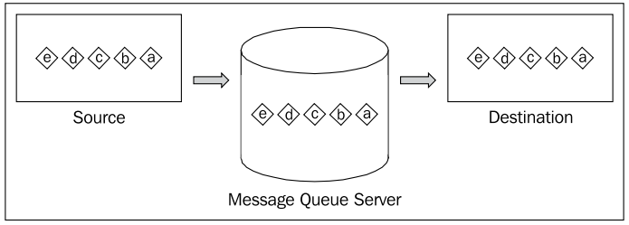
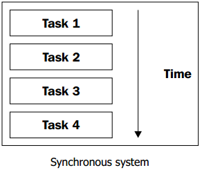
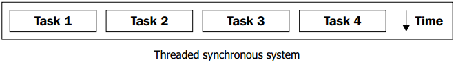
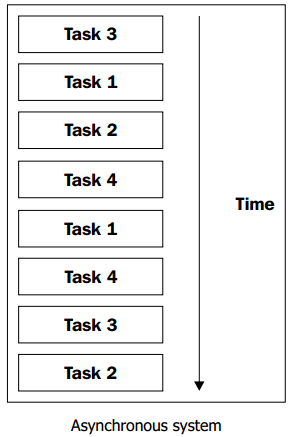
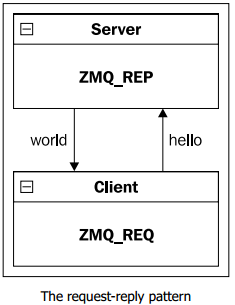
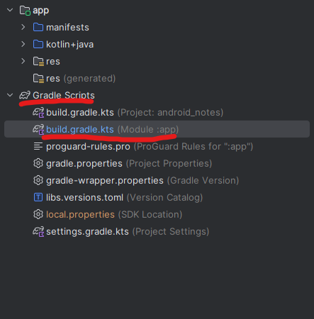
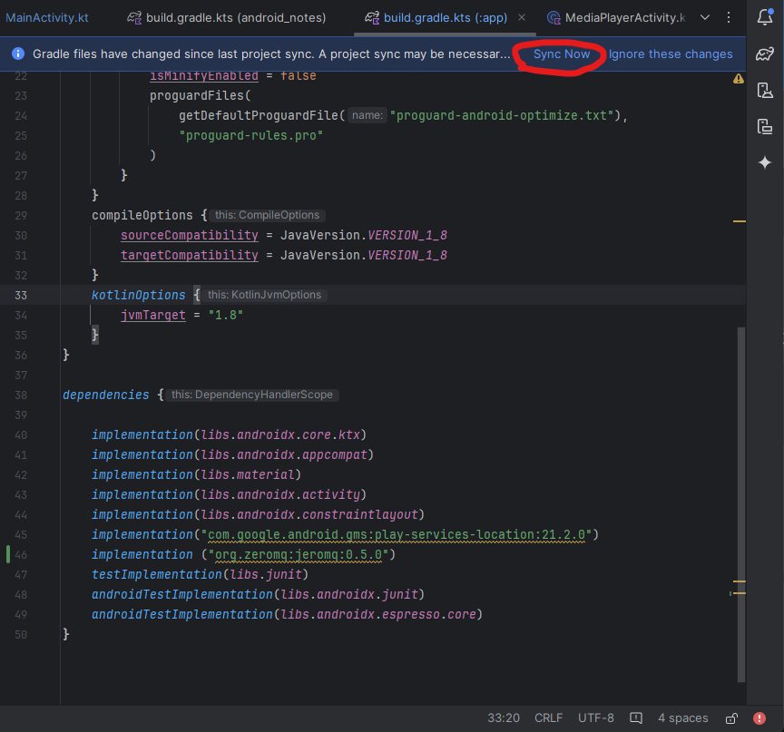

Библиотека Zero MQ (Android)
Библиотека ZeroMQ поддерживает множество языков программирвоания (при помощи bind'ов): СИ, С++, Java, Python, Rust и т.д. (по ссылке можно найти полный список).
Прежде чем начать разбираться с ZeroMQ, давайте сначала посмотрим на общую концепцию очереди сообщений.
Очередь сообщений
Очередь сообщений, или, технически, FIFO(First In First Out), является одной из основных и хорошо изученных структур данных. Существуют различные реализации очереди, такие как очередь приоритетов или двусторонняя очередь, которые имеют различные свойства, но общая идея в том, что данные добавляются в очередь когда они появляются или вызывающий абонент будет готов.
Вместе с тем очередь сообщений предоставляет гарантии, что сообщение будет доставлено независимо от того, что происходит. Очередь сообщений позволяет асинхронно взаимодействовать между слабо связанными компонентами, а также обеспечивает строгую последовательность очереди. В случае недостатка ресурсов, что мешает вам сразу же обработать посылаемые данные, вы можете поставить их в очередь сообщений на сервере, который будет хранить данные до тех пор, пока клиент не будет готов.

Синхронные системы
Очередь сообщений играет важную роль при масштабировании распределенных систем, так как поддерживает асинхронные связи. Дадим краткую информацию о разнице между синхронными и асинхронными системами. В обычных синхронных системах задачи обрабатываются по одной за раз. Задача считается не обработанной, пока процесс ее обработки не закончен. Это самый простой способ организации работы.

Мы также можем внедрить в эту систему потоки. В этом случае, процесс обработки каждой задачи выполнялся бы параллельно.

Асинхронные системы
В много-поточной модели потоки управляются самой операционной системой на одном процессоре или нескольких процессорах/ядрах.
Асинхронный ввод/вывод (AIO) позволяет программе продолжить выполнение при обработке I/O запросов. AIO является обязательным в приложениях реального времени. С помощью AIO мы можем обработать несколько задач в одном потоке.

Основы ZMQ
Простота
ZeroMQ простая. Мы можем делать некоторые асинхронные операции ввода/вывода, также ZeroMQ может ставить в очередь сообщений сообщения из потока ввода/вывода. Потоки ввода/вывода в ZeroMQ работают асинхронно при общении с сетевым трафиком, поэтому они могут делать для вас и остальную работу. Если вы прежде работали с сокетами, то вы должны знать, что это весьма не просто. Тем не менее, ZeroMQ позволяет гораздо упростить работу с ними.
Производительность
ZeroMQ быстрая. Веб-сайту Second Life удалось получить 13,4 микросекунды непрерывного времени ожидания и до 4 100 000 сообщений в секунду. ZeroMQ может использовать многоадресный транспортный протокол, который является эффективным методом для передачи данных в различных направлениях.
ZMQ_REP && ZMQ_REQ
На данном этапе мы рассмотрим связку клиент - сервер при помощи схемы “запрос - ответ” или ZMQ_REQ - ZMQ_REP.

Напишем простое клиент-серверное приложение на языке Clang:
server
#include <string.h>
#include <stdio.h>
#include <unistd.h>
#include "zmq.h"
int main (int argc, char const *argv[])
{
void* context = zmq_ctx_new();
void* respond = zmq_socket(context, ZMQ_REP);
zmq_bind(respond, "tcp://*:4040");
printf("Starting…\n");
for(;;)
{
zmq_msg_t request;
zmq_msg_init(&request);
zmq_msg_recv(&request, respond, 0);
printf("Received: hello\n");
zmq_msg_close(&request);
sleep(1); // sleep one second
zmq_msg_t reply;
zmq_msg_init_size(&reply, strlen("world"));
memcpy(zmq_msg_data(&reply), "world", 5);
zmq_msg_send(&reply, respond, 0);
zmq_msg_close(&reply);
}
zmq_close(respond);
zmq_ctx_destroy(context);
return 0;
}
client
#include <string.h>
#include <stdio.h>
#include <unistd.h>
#include "zmq.h"
int main (int argc, char const *argv[])
{
void* context = zmq_ctx_new();
printf("Client Starting….\n");
void* request = zmq_socket(context, ZMQ_REQ);
zmq_connect(request, "tcp://localhost:4040");
int count = 0;
for(;;)
{
zmq_msg_t req;
zmq_msg_init_size(&req, strlen("hello"));
memcpy(zmq_msg_data(&req), "hello", 5);
printf("Sending: hello - %d\n", count);
zmq_msg_send(&req, request, 0);
zmq_msg_close(&req);
zmq_msg_t reply;
zmq_msg_init(&reply);
zmq_msg_recv(&reply, request, 0);
printf("Received: hello - %d\n", count);
zmq_msg_close(&reply);
count++;
}
// We never get here though.
zmq_close(request);
zmq_ctx_destroy(context);
return 0;
}
Комментарии к серверной части:
Метод
zmq_ctx_new()- создает новый контекст. Он является потоко-безопасным, так что контекст можно использовать в нескольких потоках;zmq_socket(context, ZMQ_REP)- создает новый сокет в определенном контексте. Сокеты ZeroMQ не являются потоко-безопасными, поэтому они должны использоваться только в том потоке, в котором они были созданы. Традиционные сокеты синхронные, в то время как у сокетов ZeroMQ есть возможность создавать одну очередь на стороне клиента, а другую на стороне сервера, асинхронно управляя паттерном запрос-ответ. ZeroMQ автоматически организует настройку соединения, повторное подключение, отключение и доставку контента;zmq_bind(respond, "tcp://*:4040")- связывает сокет и блокирует порт4040, таким образом сервер начинает свою работу;zmq_msg_recv(&request, respond, 0)- получение сообщения от client;zmq_msg_send(&reply, respond, 0)- отправка ответа клиенту.
Комментарии к клиентской части:
Метод
zmq_ctx_new()- создает новый контекст. Он является потоко-безопасным, так что контекст можно использовать в нескольких потоках;zmq_socket(context, ZMQ_REQ)- создает новый сокет в определенном контексте.ZMQ_REQ- это метод запроса на передачу данных.zmq_connect(request, "tcp://localhost:4040")- установка соединения с сервеной частью, запрос доступа на порт4040наlocalhost;zmq_msg_send(&req, request, 0)- отправка сообщения;zmq_msg_recv(&reply, request, 0)- получение ответа от сервера.
Немного потоки в Android (Thread)
Многопоточность — возможность программы выполнять несколько задач одновременно в рамках одного процесса.
Применение фоновых потоков — необходимое условие, если вы хотите избежать появления диалогового окна для принудительного закрытия приложения. Когда активность в Android на протяжении 5 секунд не отвечает на события пользовательского ввода (например, нажатие кнопки) или приёмник широковещательных намерений (Intents) не завершает работу обработчика onReceive() в течение 10 секунд, считается, что приложение зависло. Подобные ситуации следует избегать любой ценой. Используйте фоновые потоки для всех трудоёмких операций, включая работу с файлами, сетевые запросы, транзакции в базах данных и сложные вычисления.
Потоки — средство, которое помогает организовать одновременное выполнение нескольких задач, каждой в независимом потоке. Потоки представляют собой экземпляры классов, каждый из которых запускается и функционирует самостоятельно, автономно (или относительно автономно) от главного потока выполнения программы.
Проблема классических Thread в невозможности получить доступ к объектам\обработчикам основного графического потока (UI thread). Существует пара правил по работе с потоками:
НЕ блокировать основной поток;
НЕ пытайтесь получить доступ к
Android UI TooklitвнеUI Thread.
Android предоставляет несколько вариантов работы в фоновом режиме безопасно с UI-потоком:
Activity.runOnUiThread(Runnable)
View.post(Runnable)
View.postDelayed(Runnable, long)
Handlers - начнем с с этого
AsyncTask
Пример с View.post(Runnable):
fun onClick(v: View) {
Thread(Runnable {
//DO something
while(1){
println("Hello World!")
}
}).start()
}
Жизненный цикл потока
При выполнении программы объект класса Thread может быть в одном из четырех основных состояний: «новый», «работоспособный», «неработоспособный» и «пассивный». При создании потока он получает состояние «новый» (NEW) и не выполняется. Для перевода потока из состояния «новый» в состояние «работоспособный» (RUNNABLE) следует выполнить метод start(), который вызывает метод run() — основной метод потока.
Поток может находиться в одном из состояний, соответствующих элементам статически вложенного перечисления Thread.State:
NEW— поток создан, но еще не запущен;RUNNABLE— поток выполняется;BLOCKED— поток блокирован;WAITING— поток ждет окончания работы другого потока;TIMED_WAITING— поток некоторое время ждет окончания другого потока;TERMINATED— поток завершен.
Инициализация потока
fun sayHello() {
for (i in 0..10){
println("Hello World!")
}
}
val runnableServer = Runnable{sayHello()}
val threadServer = Thread(runnableServer)
threadServer.start()
Подключение ZMQ (JeroMQ) в проект Android
Для установки библиотеки JeroMQ вам понадобится добавить зависимость в файл Gradle Scripts -> build.gradle.kts (Module :app) (как показано на рисунке ниже):

Добавляем зависимость (implementation ("org.zeromq:jeromq:0.5.0") ):
dependencies {
implementation(libs.androidx.core.ktx)
implementation(libs.androidx.appcompat)
implementation(libs.material)
implementation(libs.androidx.activity)
implementation(libs.androidx.constraintlayout)
implementation("com.google.android.gms:play-services-location:21.2.0") // -->> Location
implementation ("org.zeromq:jeromq:0.5.0") // -->> JeroMQ
testImplementation(libs.junit)
androidTestImplementation(libs.androidx.junit)
androidTestImplementation(libs.androidx.espresso.core)
}
Далее, IDE Android Studio при фиксации новой зависимости предложит вам синхронизировать все зависимости проекта:

Клиент и Сервер
Рассмотрим пример работы Клиента и Сервера в одном Activity. Для этого создадим новое Activity, например, SocketsActivity, в котором определим фукнции работы клиента и сервера при помощи ZMQ.
Код onCreate():
В данном случае добавим одно TextView и Handler для связи потоков с основным потоком UI Thread.
class SocketsActivity : AppCompatActivity() {
private var log_tag : String = "MY_LOG_TAG"
private lateinit var tvSockets: TextView
private var textString : String = ""
private lateinit var handler: Handler
override fun onCreate(savedInstanceState: Bundle?) {
super.onCreate(savedInstanceState)
enableEdgeToEdge()
setContentView(R.layout.activity_sockets)
ViewCompat.setOnApplyWindowInsetsListener(findViewById(R.id.main)) { v, insets ->
val systemBars = insets.getInsets(WindowInsetsCompat.Type.systemBars())
v.setPadding(systemBars.left, systemBars.top, systemBars.right, systemBars.bottom)
insets
}
tvSockets = findViewById(R.id.tvSockets)
handler = Handler(Looper.getMainLooper())
}
}
Код функции server:
fun startServer() {
val context = ZMQ.context(1)
val socket = ZContext().createSocket(SocketType.REP)
socket.bind("tcp://*:2222") // Replace with your server's IP and port
var counter: Int = 0
// В бесконечном цикле ожидаем "привета" от клиента и отвечаем ему, если нужно
while(true){
counter++
// Получаем данные от Клиента
val requestBytes = socket.recv(0)
val request = String(requestBytes, ZMQ.CHARSET)
println("[SERVER] Received request: [$request]")
// Здесь имитируется какая-то сложная работа
handler.postDelayed({
tvSockets.text = "Received MSG from Client = $counter"
}, 0) // Это безопасная работа с основным потоком UI Thread
Thread.sleep(1000)
// Закончили очень сложную работу
// Подготавливаем и отправляем ответ Клиенту
val response = "Hello from Android ZMQ Server!"
socket.send(response.toByteArray(ZMQ.CHARSET), 0)
println("[SERVER] Sent reply: [$response]")
}
// Безопасно закрываем контекст и сокет.
socket.close();
context.close();
}
Код функции client:
fun startClient() {
val context = ZMQ.context(1)
val socket = ZContext().createSocket(SocketType.REQ)
socket.connect("tcp://localhost:2222") // Запрос на соединение с сервером
val request = "Hello from Android client!"
for(i in 0..10){
socket.send(request.toByteArray(ZMQ.CHARSET), 0)
Log.d(log_tag, "[CLIENT] SendT: $request")
val reply = socket.recv(0)
Log.d(log_tag, "[CLIENT] Received: " + String(reply, ZMQ.CHARSET))
}
socket.close()
context.close()
}
Код запуска двух потоков (клиента и сервера):
Запускать будем в методе onResume(), когда пользователь видит окно Activity.
override fun onResume() {
super.onResume()
val runnableServer = Runnable{startServer()}
val threadServer = Thread(runnableServer)
threadServer.start()
Thread.sleep(1000)
val runnableClient = Runnable{startClient()}
val threadClient = Thread(runnableClient)
threadClient.start()
}